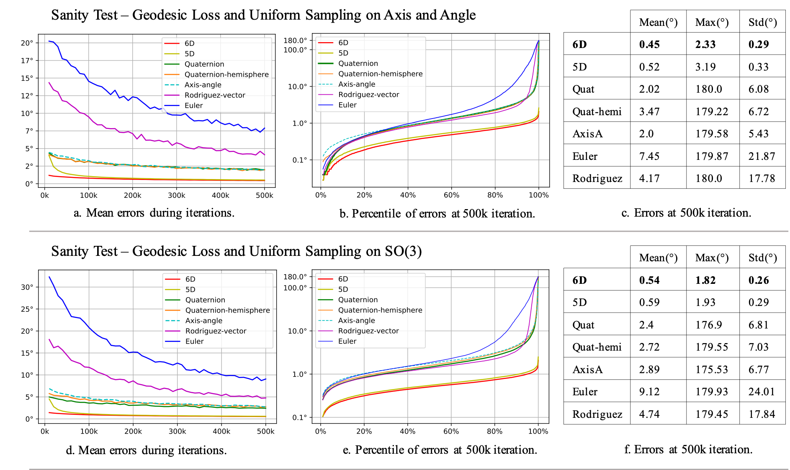

University of Southern California1 Adobe Research2 USC Institute for Creative Technologies3 Pinscreen4
In neural networks, it is often desirable to work with various representations of the same space. For example, 3D rotations can be represented with quaternions or Euler angles. In this paper, we advance a definition of a continuous representation, which can be helpful for training deep neural networks. We relate this to topological concepts such as homeomorphism and embedding. We then investigate what are continuous and discontinuous representations for 2D, 3D, and n-dimensional rotations. We demonstrate that for 3D rotations, all representations are discontinuous in the real Euclidean spaces of four or fewer dimensions. Thus, widely used representations such as quaternions and Euler angles are discontinuous and difficult for neural networks to learn. We show that the 3D rotations have continuous representations in 5D and 6D, which are more suitable for learning. We also present continuous representations for the general case of the n dimensional rotation group SO(n).
While our main focus is on rotations, we also show that our constructions apply to other groups such as the orthogonal group and similarity transforms. We finally present empirical results, which show that our continuous rotation representations outperform discontinuous ones for several practical problems in graphics and vision, including a simple autoencoder sanity test, a rotation estimator for 3D point clouds, and an inverse kinematics solver for 3D human poses.
The sanity test result on the proposed 6D and 5D rotation representations and the other rotation representations. Please check Section 5.1 and G.2 in the paper.
``Quat" refers to quaternions, ``Quat-hemi" refers to quaternions constrained to one hemisphere, ``AxisA" refers to axis angle and ``Rodriguez" refers to the 3D Rodriguez-vector.In (b) and (e), we plot on the x axis a percentile p and on the y axis the error at the given percentile p.
The 6D representation can be found in Section 4.2, Case 3 in the paper and Section B in the appendix. The 5D representation can be found in Section 4.2, Case 4 in the paper. If you find the text hard to comprehend, you can check the code here, which is quite simple.
In general, we recommend the 6D representation which performs the best in practice. But if your task requires a specific rotation representation and only deals with a subset of rotation space, you might be safe to use that representation, as long as your training data stays sufficiently far away from any discontinuities in the representation. For example, if you are representing a 2D joint with an angle in SO(2), this angle could be represented by a 2D rotation angle θ without problems, as long as the training data lies in a range such as [π/2, π] that is sufficiently far from the discontinuity at θ=0."But if your task requires a specific rotation representation and only deals with a subset of rotation space, you might be safe to use that one.
It's hard to tell. But from our experience, if the average error is very low but there always exists big errors for some instances no matter how much you expand the size of the network or how many iterations you train, it might be the problem of a wrong rotation representation.
@inproceedings{Zhou_2019_CVPR,
title={On the Continuity of Rotation Representations in Neural Networks},
author={Zhou, Yi and Barnes, Connelly and Jingwan, Lu and Jimei, Yang and Hao, Li},
booktitle={The IEEE Conference on Computer Vision and Pattern Recognition (CVPR)},
month={June},
year={2019}
}
We thank Noam Aigerman, Kee Yuen Lam, and Sitao Xiang for fruitful discussions; Fangjian Guo, Xinchen Yan, and Haoqi Li for helping with the presentation. This research was conducted at USC and Adobe and was funded by in part by the ONR YIP grant N00014-17-S-FO14, the CONIX Research Center, one of six centers in JUMP, a Semiconductor Research Corporation (SRC) program sponsored by DARPA, the Andrew and Erna Viterbi Early Career Chair, the U.S. Army Research Laboratory (ARL) under contract number W911NF-14-D-0005, Adobe, and Sony. This project was not funded by Pinscreen, nor has it been conducted at Pinscreen or by anyone else affiliated with Pinscreen. The content of the information does not necessarily reflect the position or the policy of the Government, and no official endorsement should be inferred.